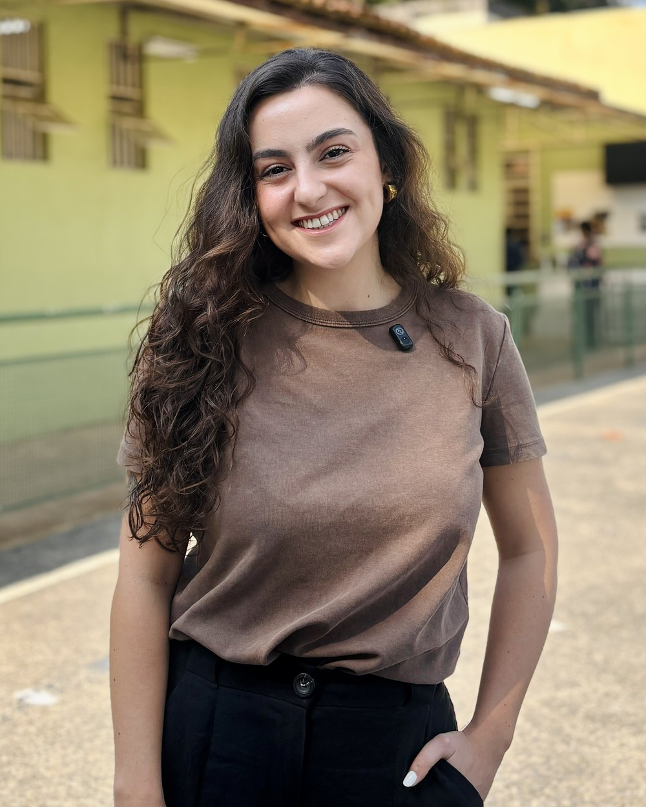
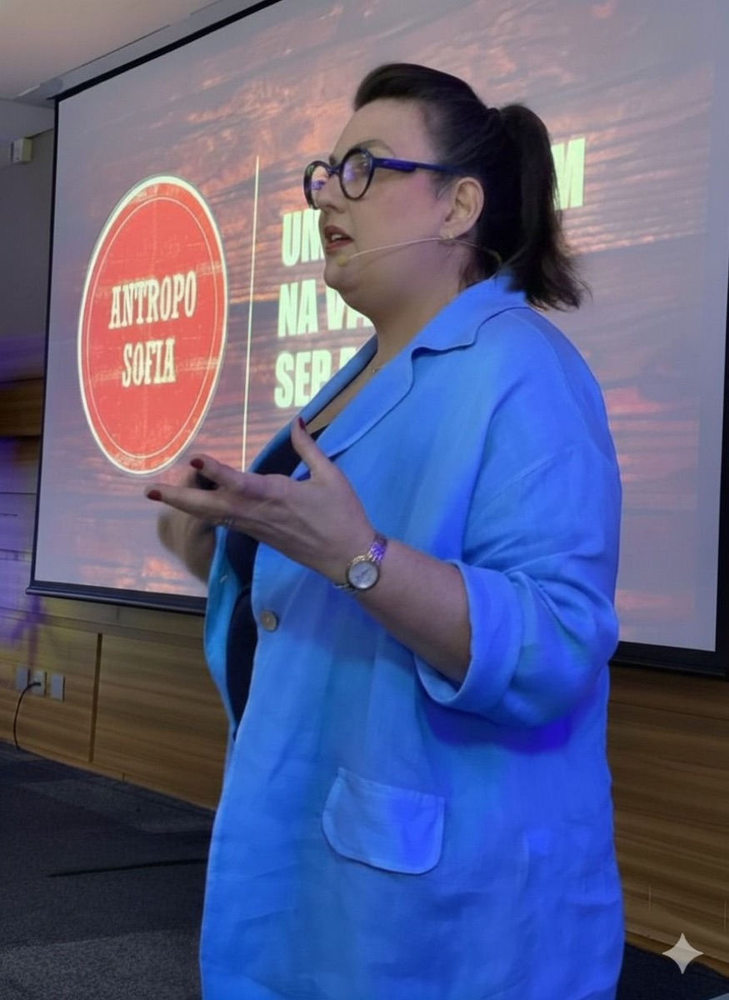
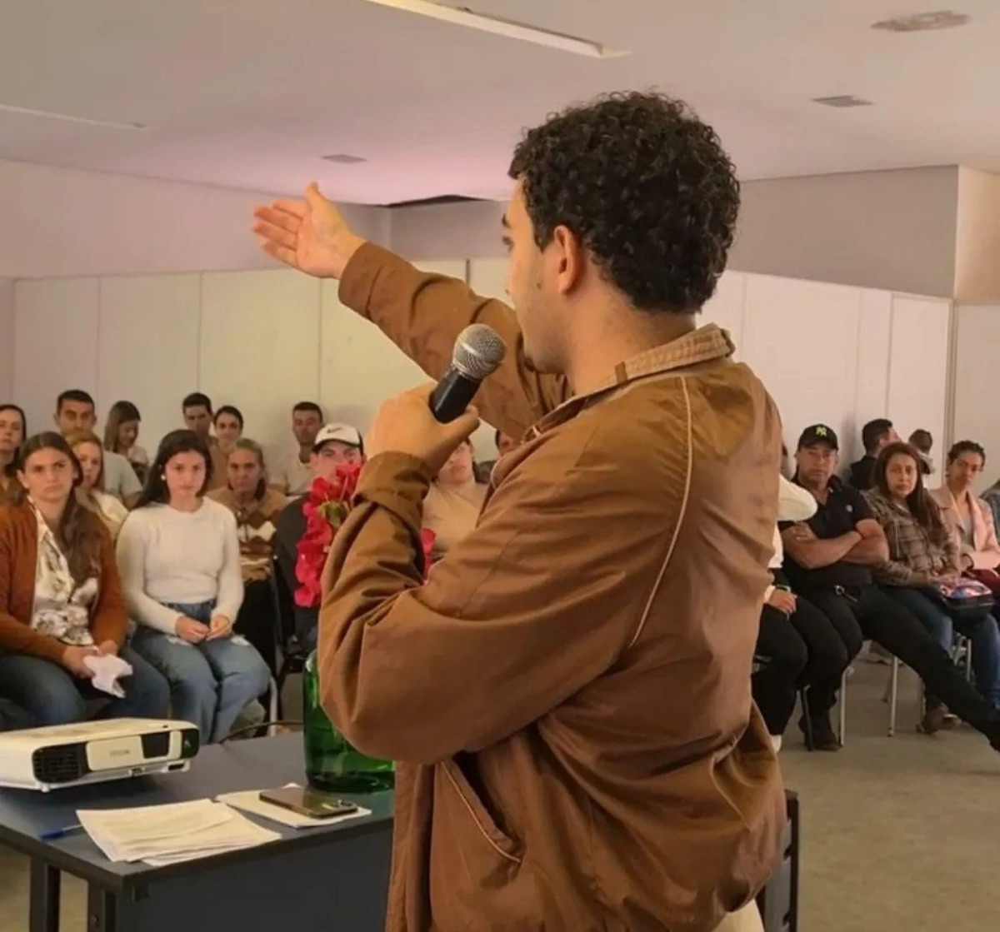
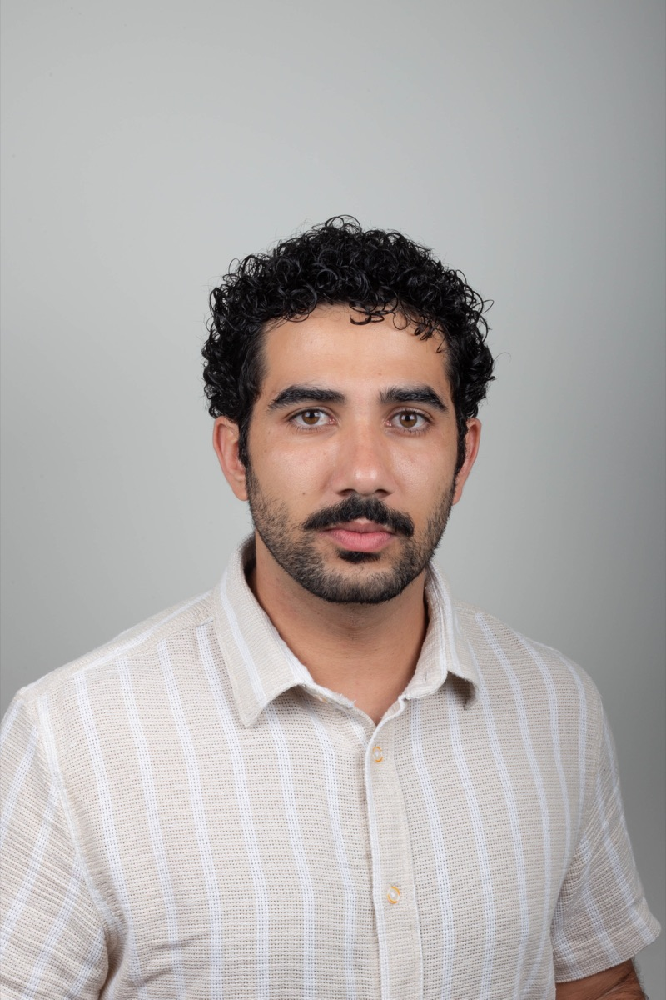
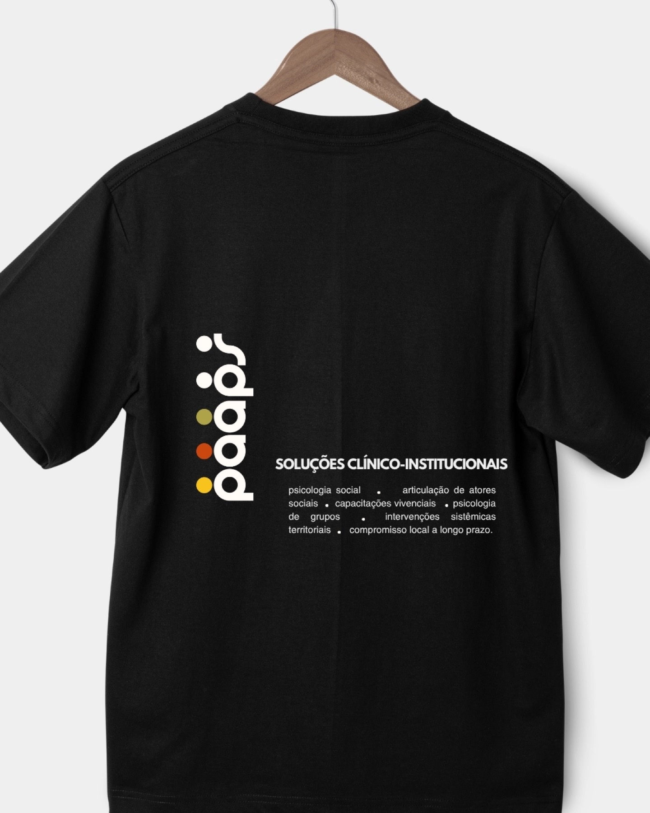
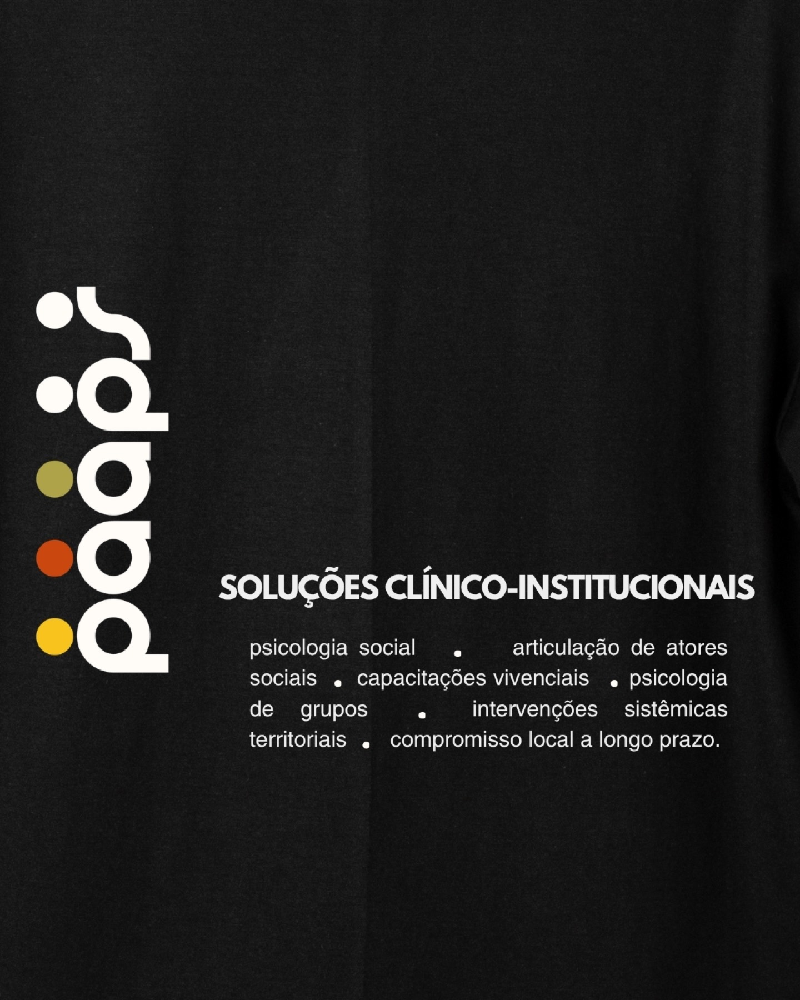
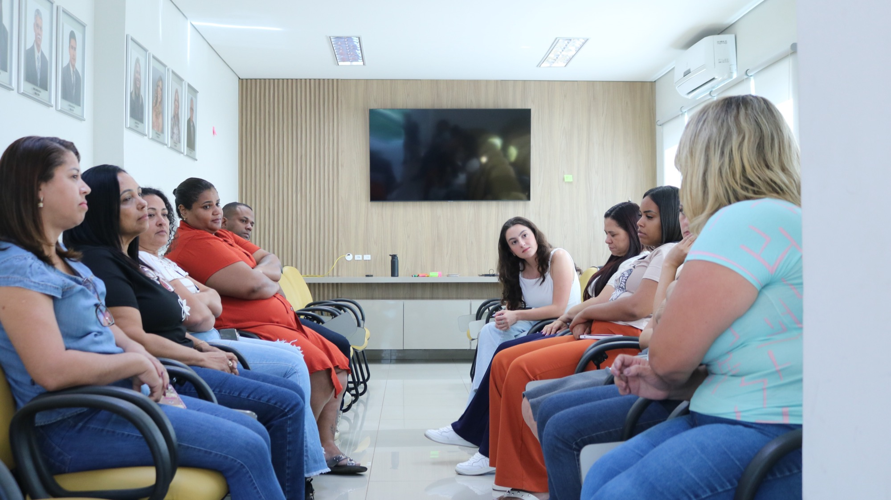
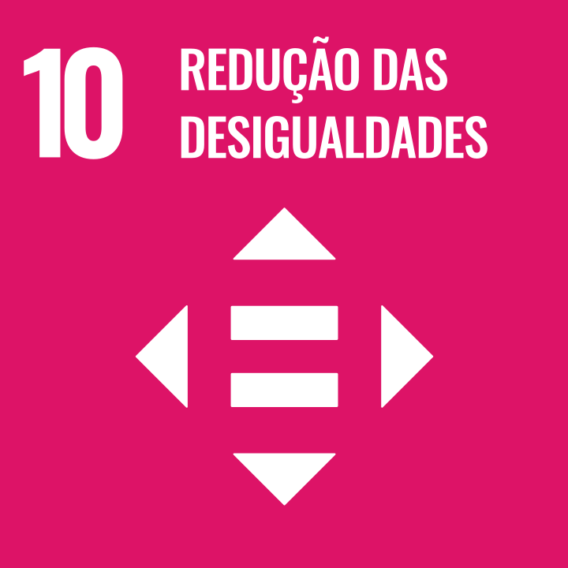

Um ano inteiro dentro da rotina da rede pública de uma cidade de 3 mil habitantes.
Inscrição para o Impulsiona Startups, eixo Inovação em Saúde, 2026 a 2027.
Inscrição para o Impulsiona Startups, eixo Inovação em Saúde, 2026 a 2027.

Por que agora
Portaria MTE 1.419/2024, com fiscalização a partir de maio de 2026 · Medida Provisória 1.355/2026, Ministério da Gestão e da Inovação em Serviços Públicos · Afastamentos e custo: Ministério da Previdência Social. Foto: Radilson Carlos Gomes, fotógrafo do SUS.
Go to market
Lei 14.133/2021, art. 74, I e art. 75, II · Limite de dispensa de 2026 atualizado pelo Decreto nº 12.807/2025 · Consórcios públicos: Lei 11.107/2005. PAAPS em campo, Minas Gerais.
Tecnologia
PAAPS em campo, Minas Gerais.
Métricas projetadas
LTV em margem bruta sobre cinco anos, com atendimento direto no ano 1 e licença nos anos 2 a 5. Foto: Radilson Carlos Gomes, fotógrafo do SUS.Equipe

Mallu Vasconcellos CEO & Founder
Fabiane Vasconcellos Chief Sustainability Officer
Gustavo Faria SDR · prospecção e articulação
Lucas Pimenta Supervisor


O pedido
Viemos pelo dado, para cruzar endividamento com folha de servidor; pela mentoria, para construir o canal de venda pública; e pelo nome, porque quem é acelerado pela Serasa entra numa secretaria de outro jeito.


